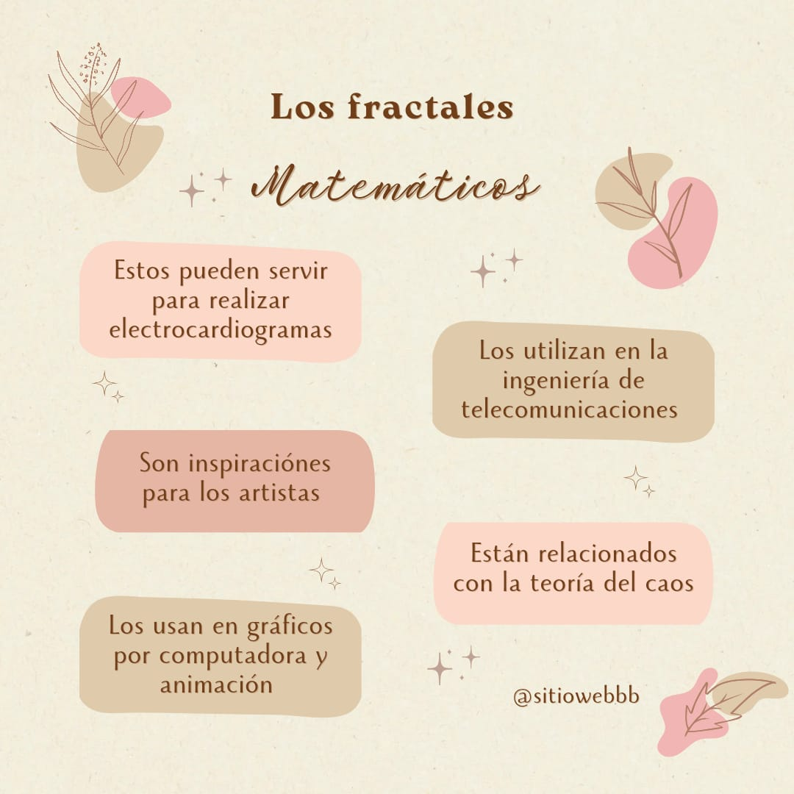

Los fractales en la vida cotidiana son más comunes de lo que podríamos imaginar. Estos patrones geométricos complejos y autosimilares pueden encontrarse en una variedad de contextos y aplicaciones que nos afectan directamente. Desde las formas naturales hasta las innovaciones tecnológicas, los fractales nos rodean y enriquecen nuestra percepción del mundo.
El concepto de fractales ha sido explorado por muchos matemáticos y científicos a lo largo de la historia. Benoît Mandelbrot es quizás el más conocido por popularizar el término, pero figuras como Gaston Julia y Georg Cantor también hicieron contribuciones importantes. Estos descubrimientos han abierto nuevas perspectivas en la comprensión de la naturaleza y las matemáticas.
La tecnología ha aprovechado los fractales para mejorar diversos aspectos del diseño y la computación. Los algoritmos fractales se utilizan en la creación de gráficos por computadora, permitiendo generar paisajes y texturas realistas. Además, en el diseño de software, los fractales pueden optimizar la eficiencia de los algoritmos y la gestión de dato